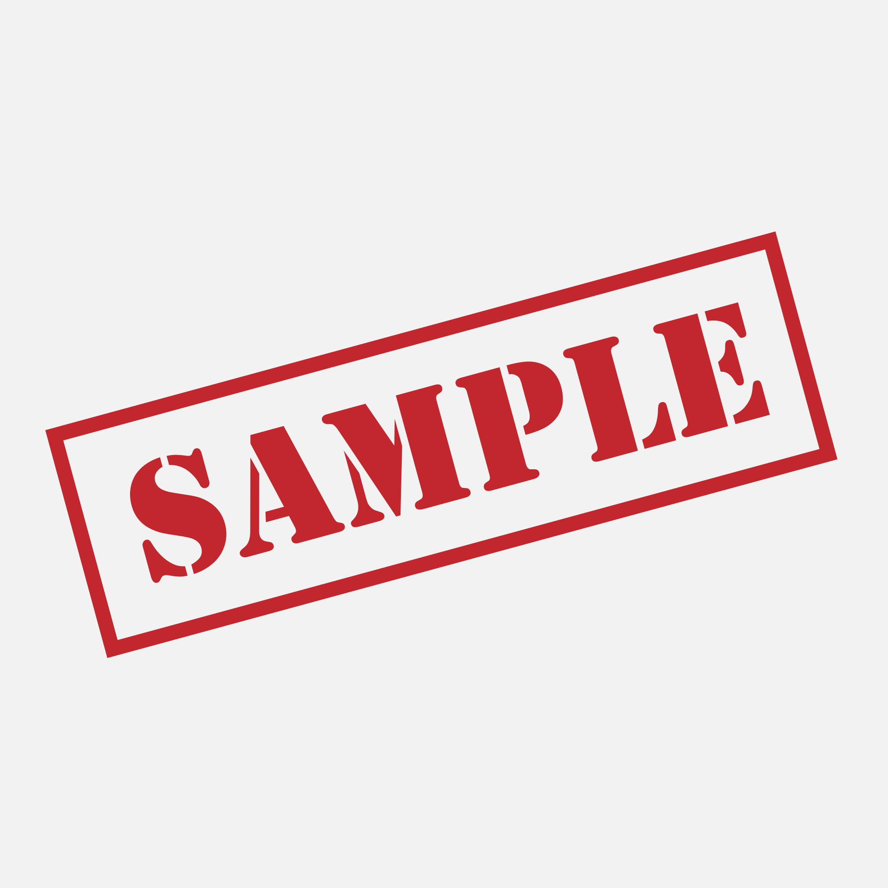
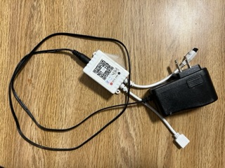
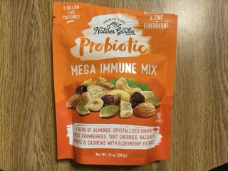

Week 05: Lights Out
This week, I part ways with my LED light strip from 2022. Catch the specifics after a short monologue covering the reasons behind this activity.
Preface: Why I'm Sharing My Trash with You
I have always aspired to reduce the waste I generate. I could talk about sustainability in abstract terms, but to be honest my habits have been invisible to me from the moment the bag left my hand. As a result, I have started tracking my trash each week to understand my usage and consumption patterns. Writing it down forces me to confront my reliance on packaged food, the amount of plastic said convenience generates, and how quickly those “small” items add up.
Beyond the confines of my household, I believe that making this data public can spark a necessary conversation about systemic waste. It is one thing to know that society has a trash problem, and yet another to see a week's worth of non-recyclable debris laid out as a personal footprint. Sharing this journey builds up the path towards better personal accountability. When habits are visible, even in a small way, they feel more real and harder to ignore. It shifts waste from something distant and inevitable to something shaped by daily (sometimes momentary) decisions.
Over the duration of this exercise, it became less about guilt and more about awareness. I have started pausing before purchases and asking whether something is necessary, reusable, or avoidable. Documenting my trash each week turns an automatic routine into a conscious practice, helping me align my actions more closely with the values I already claim to hold.
Inspirations
Vik, M. (2023, December 6). Vik Muniz on turning trash into art - The New York Times (Guest Essay).
Lee, T., & Newman, S. (2023, August 8). An archaeologist talks trash. University of Chicago News.
Khattak, R. (2023, December 1). Landfill waste: What can we do to minimise it?. Earth.Org.
Weekly Overview
During this exercise, I deliberately selected a variety of items to conduct a thorough analysis of my carbon footprint. A lot of the items I discarded this week are old and well-used, which I felt good about since it aligns with my personal motto of "use until unusable". Now interestingly, I did notice a shift in my patterns compared to previous weeks. While the middle of this project had a streak of low-value, almost trivial items, this week I had a shocking realization. My earlier hesitancy to part with sentimental or complex objects inevitably had led to a backlog that I will have to confront starting next week.
Another surprising realization this week was how my view of "uselessness" has evolved over the last few weeks. I tend to delay throwing things away if I think they could be repaired (and end up never actually repairing them). Seeing the light strip hanging alongside larger mechanical waste made me realize that holding onto broken items doesn't really preserve their value. It only creates a mental and physical burden of "unfinished business" and takes up unnecessary space.
Categories:
- The Strong Ones (mostly metallic)
- The Weak Ones (mostly plastic)
- Sunglasses
- LED light strip (controller)
- Nut Mix Pack
- Old Pair of Shoes
- The Outliers
- Ice Cream Box
- The Bowls
This first category consists of 3 objects defined by their metallic composition and structural durability. This list includes the heating element that was used for years in my stovetop for cooking, a pressure cooker used for primarily cooking some of my favorite Indian dishes like lentils (dal) and rice (fried vegetable rice or kichadi), and an umbrella used for many rainy days.
The heating element is small, coiled, and slightly rusted. It stopped working reliably. Many times, when I left dishes to cook, I would come back to discover they weren't cooked properly.
The pressure cooker is heavy stainless steel. Unfortunately, I dropped the cooker which disturbed its shape and repairs weren't worth the cost. Luckily, I had a backup lying around.
The umbrella was gifted to me by my parents. During a particularly stormy night, the umbrella was violently undone by the gusts, and the supporting sticks snapped. Sadly, this resulted in a very wet night for me, and I ended up with a cold the next morning.
The second category consists of 4 lightweight, mostly plastic items that wore down through frequent use.
I had gotten the sunglasses during a visit to the career fair from the PNC stall. I used them for a couple of parties with my friends, and got some good photos out of them. After a few months, the novelty wore off, and I stopped using them. I discovered them during a routine cleanup in Jan 2026, and ended up discarding them.
I had gotten the LED light strip to illuminate the dark and dingy dorm room that had been assigned to me by the university during my freshman year. After using them for a few years as I moved dorms, they stopped working. Now, out of fear of being penalized for stripping the paint, I only took down the controller box and captured it for my record. The actual light strip is still pasted on the walls, and maintenance will carefully take it down when I move out.
The Nut Mix Pack was obtained during a regular shopping trip due to the insistence of my mother to eat a variety of food items. After delibrating between a couple of options like immune builder, keto mix, etc., I ended up choosing two packets, one of which happened to be this "deluxe" mix. I devoured my favorite cashew nuts during a study session for Operating Systems, and eventually got through the rest of them. It had some tasty nuts, but I chose a different pack during my next trip to the store.
The Old Pair of Shoes (by Dunlop) were bought by me during a vacation in Japan. I felt they were quite comfortable and supported me well throughout the years. However, the rubber was worn down, and it became dangerous to walk in the snowy conditions. As a result, I ended up abandoning them earlier this year.
Finally, I was left with the outliers. These didn't really fit cleanly into my first few definitions (the porcelain bowl disqualifies the Bowls from the second classification), so I created a bucket just for these two remaining items. The bowls were among the first "adult" kitchenware I purchased for my journey into college. If I could separate them, I would still use them.
The ice cream box was purchased during my first ever trip to Trader Joe's. For quite some time, my friends had asked me to try their produce (especially some of the Indian items), so I had decided to take out some time to take a taxi and try out some new things. I liked the ice cream cones that came out of it.
Gallery of Selected Weekly Trash







Trash Data Table
| No. | Item | Weight | Source | Location | Cost | Owned | Mode | Sentimental Value | Physical Shape |
|---|---|---|---|---|---|---|---|---|---|
| 1 | The Bowls | 150 g | Walmart & Local Shop in Japan | Kitchen Counter | $5.00 | 3 years | Medium | Round | |
| 2 | Plastic Sunglasses | 25 g | PNC stall at Rutgers Career Fair | Drawer | $0.00 | 1 year | Low | Oval (front) | |
| 3 | Ice Cream Box | 69 g | Trader Joe's | Freezer | $3.99 | 4 days | Low | Rectangular | |
| 4 | Nut Mix Pack | 7 g | Bravo Supermarket | Snack Bar | $6.99 | 3 months | Low | Rectangular | |
| 5 | LED light strip (controller) | 10 g | Amazon Online Store | Bedroom Wall | $17.05 | 3.5 years | Low | Rectangular | |
| 6 | Heating Element | 670 g | Home Depot | Stovetop | $13.99 | 2 years | Medium | Round | |
| 7 | Old Pair of Shoes | 800 g | Local Shop in Japan | Storage Bin | $10.49 | 7 years | High | Wide (front and ankle) | |
| 8 | Pressure Cooker | 1.5 kg | Local Shop in India | Kitchen Counter | $25.50 | 5 years | High | Round | |
| 9 | Broken Umbrella | 200 g | Gift from Parents | Storage Bin | $18.99 | 8 years | Medium | Round (open top) and Rectangular (closed) |
Guide: Trash = | Recycled = | Donated =
Coda: Until Next Week!
To sum up the work so far, it has been quite an interesting ride. Lot of new discoveries about myself and much more to unwrap. I definitely want to purchase more products packaged in sustainable or biodegradable materials. Thank you for following along, and feel free to ask me any questions about my processes or data. I hope you join me on my journey, and I wish you the best of luck with whatever you do next. Look forward to the next week. :D
References
Citation Machine® - write smarter. Citation Machine https://www.citationmachine.net
General Writing Resources. General Writing Introduction - Purdue OWL® - Purdue University. https://owl.purdue.edu/owl/general_writing/index.html
Stock photos, royalty-free images, graphics, vectors & videos. Adobe Stock https://stock.adobe.com
Grammarly. https://www.grammarly.com
Page Version History
Version 2.0- Layout fixes including a new CSS style experience, which includes a navigation header, body margins/formatting and footer.
- Added a more memorable experience for "sunglasses" and "nut mix pack", plus a small change in coda.
- TOTW Main Webpage is live!
- Removed "continued on next page" from text.
- Link with top site nav (Home).